麥當勞歡樂送 APP
Product Research & Redesign
麥當勞在 1984 年進入台灣後，至今早已穩佔速食業龍頭的寶座，深植大小朋友的心。就連我本身也是對麥當勞的薯條愛不釋手。而隨著時代的進步及消費者習慣的改變。麥當勞更是為愛用 3C 的外送族群推出了全台唯一 24hr 的點餐外送 APP — 麥當勞歡樂送。理當便利不少人的 APP，卻在應用程式的商店中獲得了一面倒的負面評價。
研究
使用者調查
我從三個方向來進行研究方法，以便能加了解使用者用戶特徵以及使用者在操作上遇到的問題。
1. 用戶回饋
為獲取使用者的意見，參考了 App Store 與 Google Play 中的留言評價。
麥當勞歡樂送 App Store 總評分
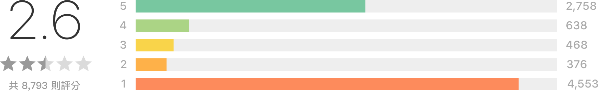
麥當勞歡樂送 Google Play 總評分
部分好評
- 第一次使用，訂餐後半小時內就送來了，東西也沒涼掉，感覺不錯。外面又濕又冷，外送人員辛苦了。
- 服務超滿意很感謝外送人員很準時也謝謝你們下雨天還淋著雨吹著冷風等著我們真的很感謝你們送美味的餐點。超 nice der。
- 半夜四點半叫外送真拍謝。
- 剛設定有些許複雜，但是認證是必須要的，不然太輕易就讓小朋友亂入，也會造成不少後續困擾。 總之……設定好就很好用~
- 超方便的～想吃隨時都可訂～現在還可以刷卡～讚啦～超討厭找錢的說。
- 為開發團隊鼓掌!，希望下個版本能增加電子載具及儲存信用卡資料的功能，感謝！
部分壞評
- 一直跳掉當掉，還沒有辦法儲存訂單記錄，信用卡付款要填的欄位一直被擋住按不到確定。
- 訂單出錯最後還是打電話比較快，餐點又少送一份 飲料倒半杯真的傻眼。
- 看著 app 顯示已送達就急著下樓等，但每一次都還沒送達。
- 系統很註冊複雜 手機號碼傳送註冊碼就有問題。
- 到底哪裡才是送餐範圍啊？是很荒郊野外嗎…註冊搞得那麼麻煩然後才說不能送…送餐範圍到底在哪啊，可以標明嗎？
- 訂完餐要回頭看訂購金額，確找不到地方可以查詢，建議除了可以查到訂單進度外，也可以查到訂單詳細內容
2. 使用者體驗及系統易用性問卷調查
我在學術論壇上發佈問卷，請有使用過歡樂送 APP 並成功訂購餐點的人來填寫。 總共回收了 64 份有效問卷。其中 30 份是學生族群、34 份是上班族群填寫。針對註冊、訂餐流程與 APP 整體上做系統易用性量表，分別獲得了 61.25 分、62.5 分與 65.56 分。皆為評分 D。
下列是使用者行為特性的部分調查結果：
- 「懶得出門 (e.g. 打電動、追劇)」是大家使用麥當勞外送服務的最大原因，其次才是「天氣因素」。
- 訂餐時的人數狀況調查中，「與兩三名朋友一起合訂」佔了最多數。
- 選擇「一人單獨訂餐」男女的比例大約為 1:1.6。
- 習慣「現金付款」佔了 75%、「信用卡支付」佔了 25%。
3. 啟發式評估
根據 Jakob Nielsen 在 2005 年時提出了「Ten Usability Heuristics(10項優使性啟發)」，發現有下列的問題。
- 一致性和標準
- 靈活性與使用效率。
- 美術與簡化設計。
- 幫助用戶認識、偵錯並從錯誤中恢復。
問題描述
從上列調查中我得出使用者面臨的以下問題：
- 系統穩定度不足，使用者常會面臨各種系統狀況與無限轉圈。
- 使用者需要花些時間來理解菜單上的資訊。
- 使用者不想中斷目前正在做的事，想要能快速地訂完餐點。
- 使用者在多人一起點餐的情況下，容易因時間過久造成購物車被清空。
- 使用者無法瀏覽詳細的訂餐內容與金額。
- 使用者在面臨外送超時或餐點有問題時找不到方式聯絡。
- 介面已過時不符合現在新手機螢幕大小，造成有些裝置在操作上有困難。
- 使用者在錯誤訊息中無法精確地得知問題點以及提出建設性的解決方案。
- 使用者仍習慣用現金付款，使用信用卡線上付款的誘因不足。
大多數的問題可以通過以下方式解決：
- 系統與伺服器優化。
- 介面的優化與簡化。
- 資訊架構與操作流程調整。
重新設計
資訊架構
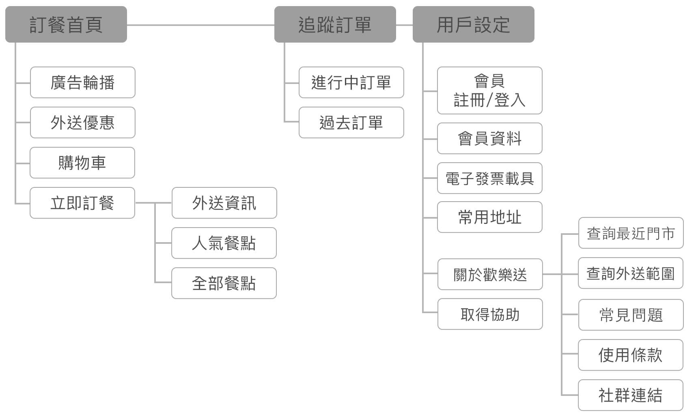
介面優化
1. 首頁與主選單按鈕重新規劃
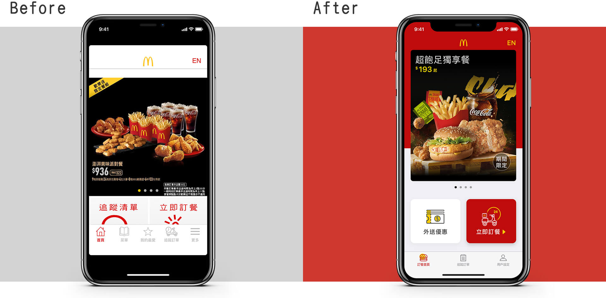
- 用了大面積的紅色加強品牌的識別力。
- 原先首頁按鈕與下方主選單有眾多重複，在資訊架構中重新做了分類並簡化主選單。
- 我將原先的廣告輪播分為「餐點促銷」與「外送優惠」兩種，餐點促銷因較需要圖片的輔助，所以仍放置在原先的輪播位置。而外送優惠的入口改放在原先追蹤清單的位置。
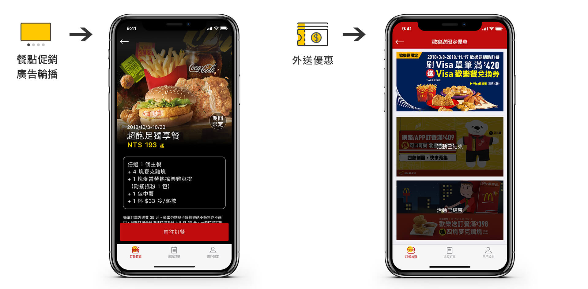
- 原先首頁的廣告輪播沒有獨立頁面，點擊只會連至菜單首頁。所以我新增了餐點促銷的活動頁，上面可清晰地看到餐點內容介紹，不用再盯著麥當勞圖片上的小字看。且點擊下方按鈕可直接連到該頁面進行後續訂餐的動作。
- 新增歡樂送限定的優惠頁面列表，方便大家看到目前有哪些好康活動。
2. 登入頁面
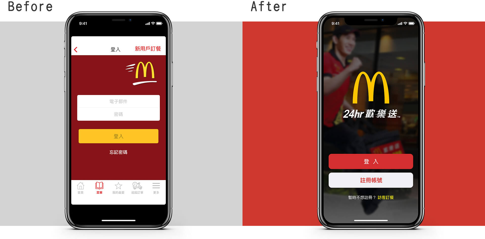
- 原先暗紅底非麥當勞的標準色，改用照片加強麥當勞歡樂送的形象概念。
- 將註冊帳號及訪客訂餐併入與登入同一畫面，省略了原先不必要的介紹文字。
3. 外送資訊頁面
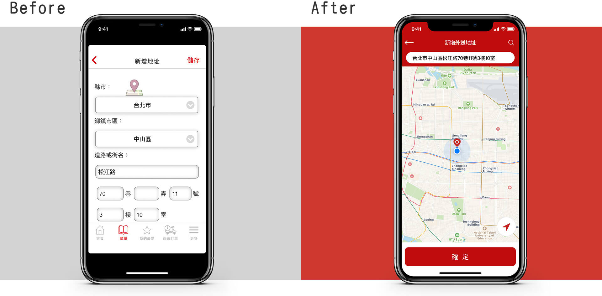
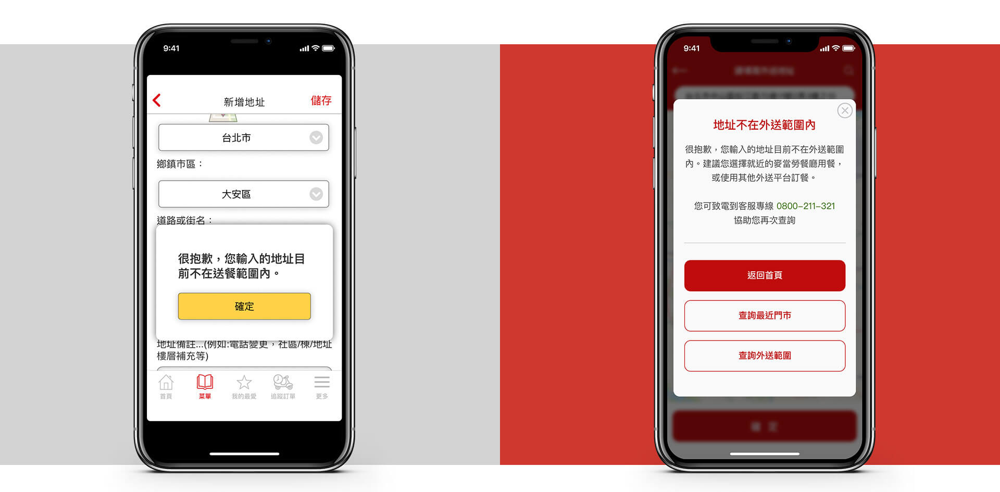
- 直接使用較為直觀的地圖模式讓使用者填寫地址，同時也可直接輸入外送地址。
- 當地址判斷為非外送區域時，提供使用者建議與客服聯繫方式。
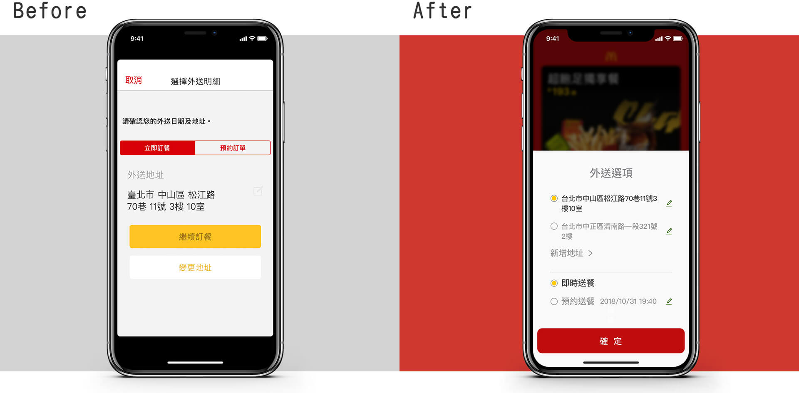
- 將原先藏在底下一層的內容(選擇、編輯地址)直接全部秀出來，讓使用者能快速有效率的選擇。
4. 菜單版面設計
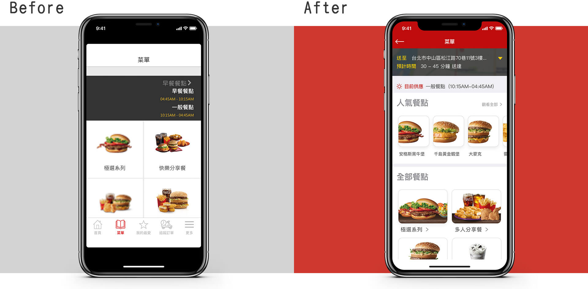
- 原先菜單的頁面用了近 1/3 在提示餐點的供應時間 (登入後則是顯示外送地址與抵達時間)，然而此頁重點應該是放在餐點的選擇上。所以我將這些資訊的空間縮小，並新增了「人氣餐點」的區域，來顯示部份餐點的捷徑。同時也可促進讓使用者嘗試其他口味的動機。
- 在新版的菜單中，因希望使用者能專注在餐點上，不被其他事物干擾，所以我將暫時不會用到的主選單隱藏起來。
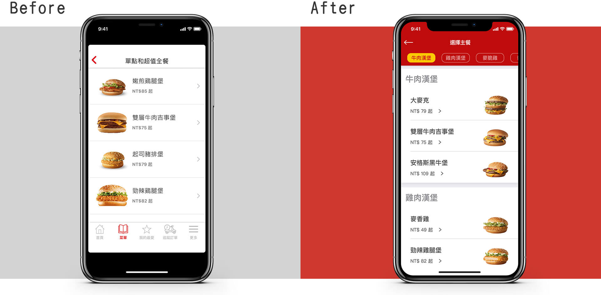
- 我將餐點重新做了分類，且在上方新增了各分類的標籤，方便使用者能快速找到想吃的餐點。
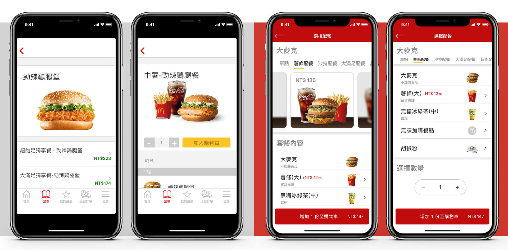
- 舊有的歡樂送在選擇搭配副餐的頁面時，使用者僅能從文字上判斷猜測餐點。直到點擊進到另一頁面看到圖與文字後才能知曉答案。所以新版的更動中，使用者不需要切換頁面就可以點擊上方標籤或滑動圖片來快速選擇配餐。
- 新增可在各個餐點下方備註客製化需求。（e.g. 漢堡不加醬、飲料去冰）
- 將「放入購物車」的按鈕置底，價錢可因選擇的餐點不同而即時的看到變化。
5. 購物車頁面
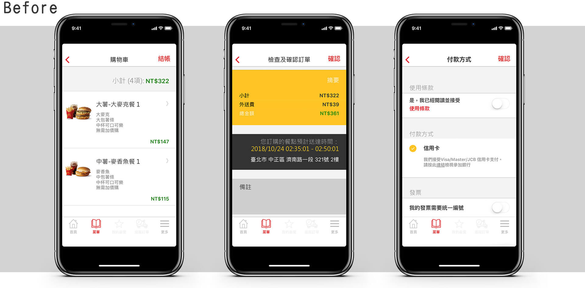
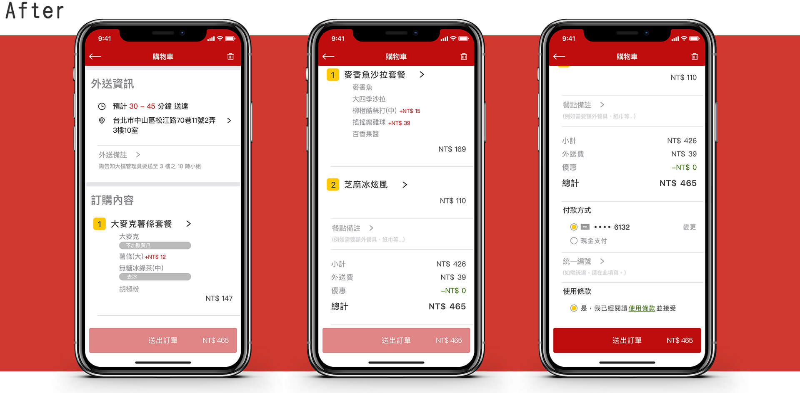
- 舊有的購物車分成了「餐點明細」、「檢查確認訂單」、「付款方式與條款」三個步驟的頁面，然而檢查訂單的頁面中餐點明細又重複出現了一次，若要更改餐點內容，仍必須回到上一頁才能編輯。因此我決定將這三頁併成一頁並簡化，讓使用者能一氣呵成快速又簡單地送出訂單。
- 我將舊有的備註欄分成「外送備註」與「餐點備註」，方便相關的工作人員能快速地查看。
6. 填寫信用卡資料
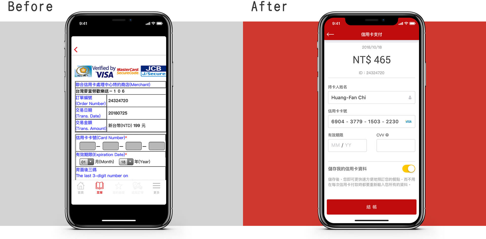
- 原先 APP 的做法是直接嵌入網頁，無針對手機使用做優化。
- 因這裡的重點應該是讓使用者填寫信用卡片資料與付款金額，所以我弱化原先的「訂單編號」與「交易日期」。
- 新版中，在最後加了一個開關讓使用者能存取信用卡資料，以利未來能不用再花時間填寫資料，加快購買速度。
7. 追蹤訂單
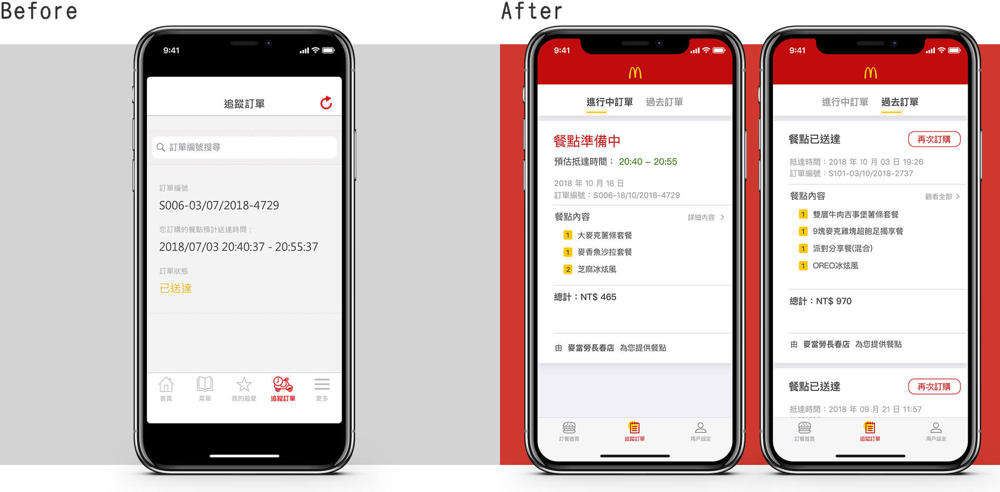
- 我將追蹤訂單分為「進行中」與「過去訂單」兩個分頁。
- 當使用者送出訂單後，最迫切想知道的是目前訂單的進度狀況與餐點的抵達時間，所以我將這兩項移至最上層。另外增加了訂餐明細與金額，方便使用者核對餐點與準備現金付款。
- 已送完餐點的訂單會被分在過去的訂單中，裡面新增了再次訂購的按鈕，可以將當次訂購的餐點再度加進購物車中。取代舊有「我的最愛」的功能。
- 我在每筆訂單的下方都加進了負責餐點的門市名稱，若有異常的情況下，方便使用者能快速聯繫到負責店家。